17 januari 2001 Roda JC - 1. FC Köln (3-2)
17 januari 2001 Roda JC - 1. FC Köln (3-2)
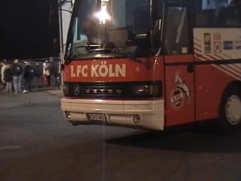
De spelersbus van de gasten voor het oefenduel van vanavond.
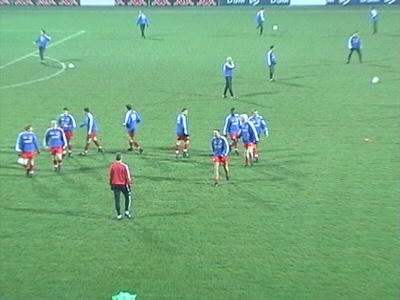
Köln in blauw trainingstenue.
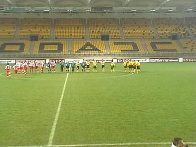
Zuid was niet toegankelijk. Er waren slechts kaarten beschikbaar voor noord, west en het bezoekersvak.
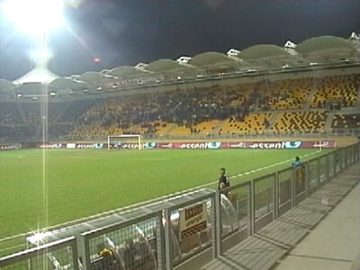
Op west verzamelden zich enkele honderden supporters.
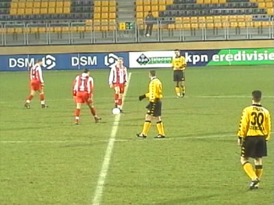
Vlak voor de aftrap. 1. FC Köln in het bekende rood-wit tenue.
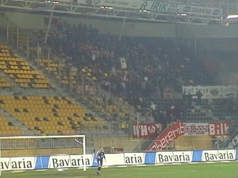
Er waren enkele honderden Köln-supporters in Kerkrade.
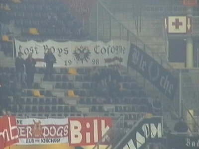
Enkele spandoeken van de gasten uit Kulle.
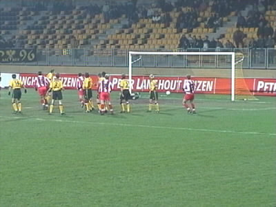
Vrije trap...die erin gaat!
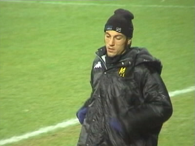
Ivan Vicelich loopt zich warm.
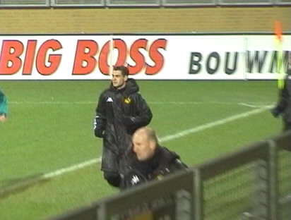
Nicos Kounenakis eveneens.
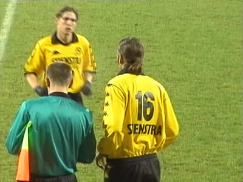
Vicelich vervangt Kevin van Dessel.
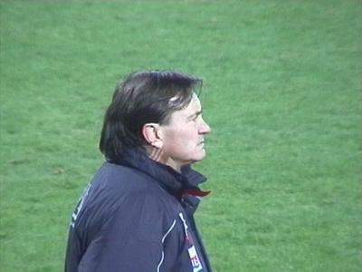
Ewald Lienen, de trainer van Köln.
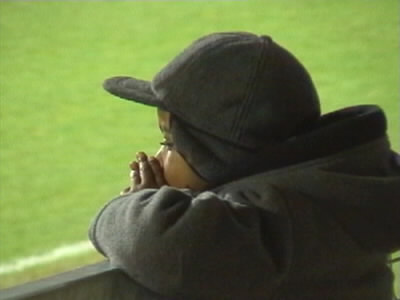
Paaaaapaaaaa...........!
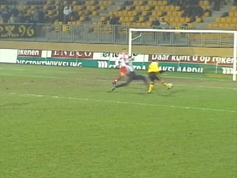
Torma scoort de gelijkmaker
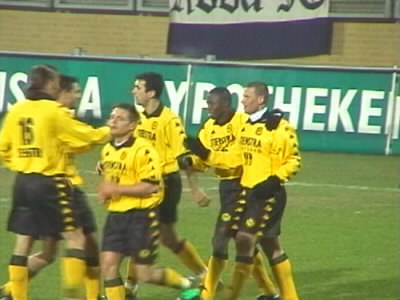
Vreugde en "Jool is jool" weerklinkt door het stadion.
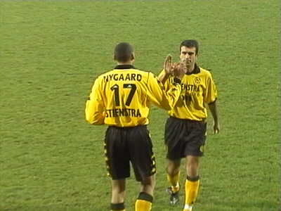
Nygaard lost Ioannis af.
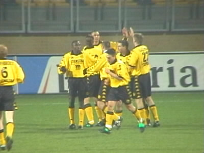
Nygaard heeft er zojuist 2-1 van gemaakt.
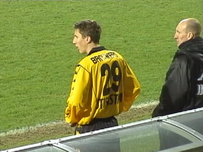
Dit is Roel Brouwers.
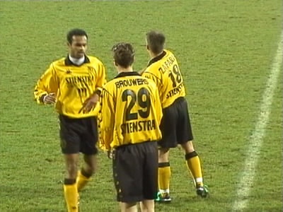
Hij komt in het veld voor Humphrey Rudge.
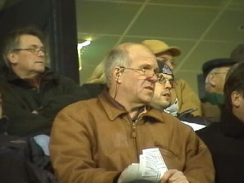
Theo de Jong (ex-Feyenoord) zit ijverig aantekeningen te maken. Tegenwoordig heeft hij een clubje in Finland, maar
verricht tevens scoutingwerkzaamheden voor Glasgow Rangers.
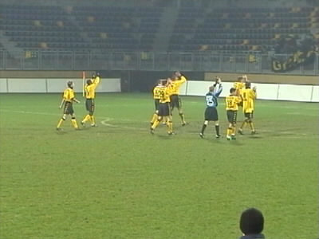
De eindstand is 3-2. De spelers bedanken het publiek.
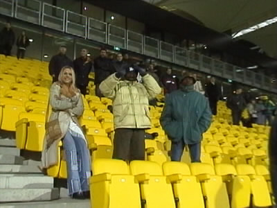
Bernard Tchoutang die geflankeerd wordt door de vriendin van Marc Nygaard.......
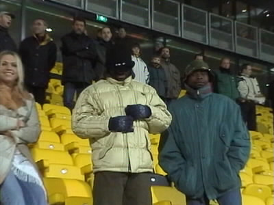
.....blijkt wel van een grapje te houden!
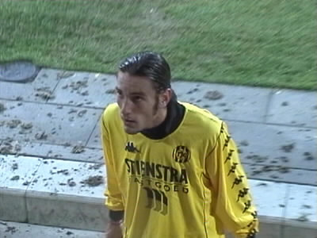
Ivan Vicelich. Waarschijnlijk een blijvertje bij Roda JC.
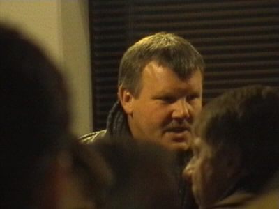
Herinnert u zich deze nog?!
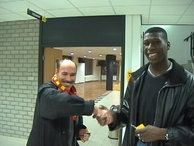
De kixe Regillio Vrede bleef vanavond op de bank maar maakte na het gezamenlijk banket met de FC Kölnspelers
een afspraak waar we hem zeker aan zullen houden zo rond de "fastelaovend"...........
©KPD